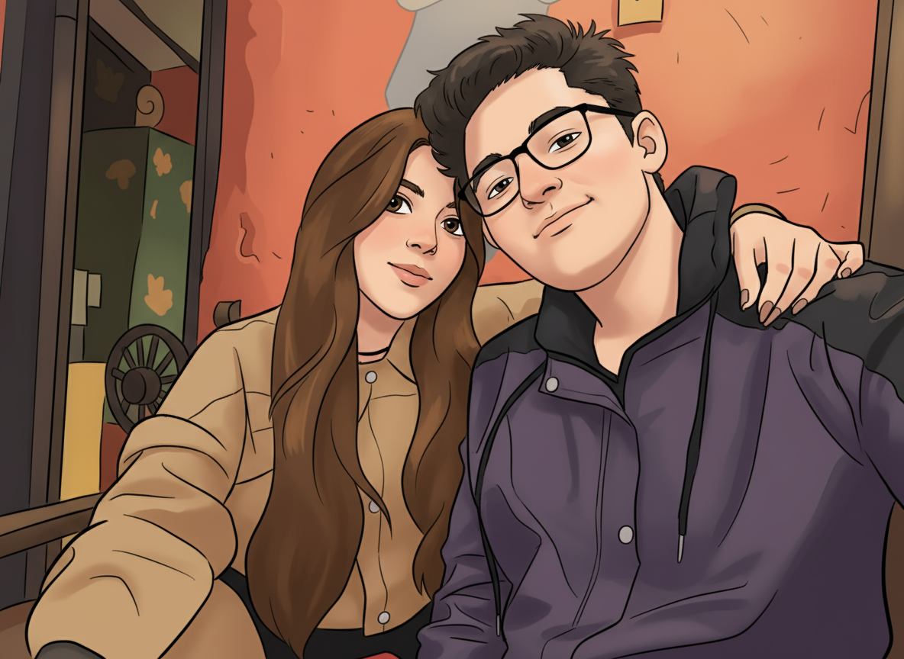

♡Feliz Aniversario♡
Nicolás & Ginna • 3 años juntos
En este día especial, quiero recordarte lo importante que eres para mí.
Hace 3 años comenzó nuestra aventura y desde entonces has llenado mi vida de amor, ternura y alegría.
Eres la personita que mas ilumina mis días, que me da fuerzas y me inspira a ser mejor.
Gracias por ser paciente conmigo, por todos los momentos que compartimos, desde los más simples hasta los locos.
Porque al pasar tiempo contigo, hasta con los pequeños detalles descubro lo mucho que me gusta estar contigo, y todo el amor que siento por ti.
Te amo con todo mi corazón, mi amor.
Eres mi mejor regalo, mi compañera de aventuras y el amor de mi vida.
¡Feliz aniversario!
